CS 8803 CGA - Participating Media
Participating Media Model
Definition
- Participating media can be thought of as a collection of particles suspended in a vacuum
- As a photon travel through the scene, it may interact with the medium by hitting one of these particles.
- If we consider an infinitesimal segment of media, when a photon travels through this segment, a number of possible interactions might occur.
Assumptions
- statistically independent positions
- isotropic particles, or
- isotropicallyoriented anisotropic particles
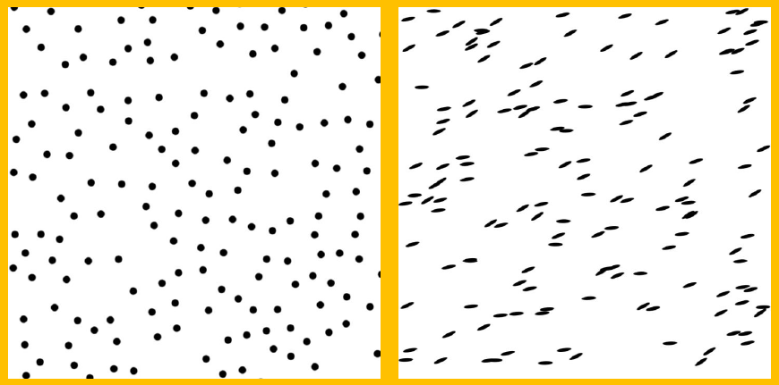
Categories
- Homogeneous Media: Infinite or bounded by a surface or simple shape (glass, transparent solid objects, light beams inside a dark room)
- Heterogeneous Media (spatially varying coefficients):
- Procedurally e.g.,using a noise function
- Simulation + volume discretization, e.g.,a voxel grid
Differential Beam
How much light is lost/gained along the differential beam due to interactions of light with the medium? Think of a differential beam segment and see the following situations.
Four Processes
Absorption
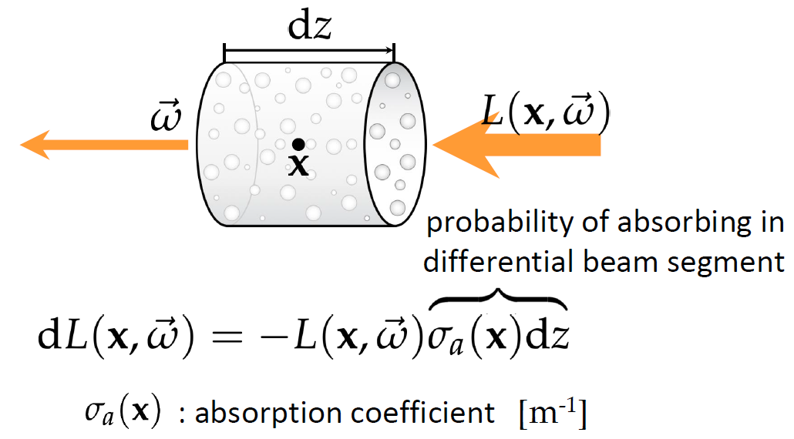
Out-scattering
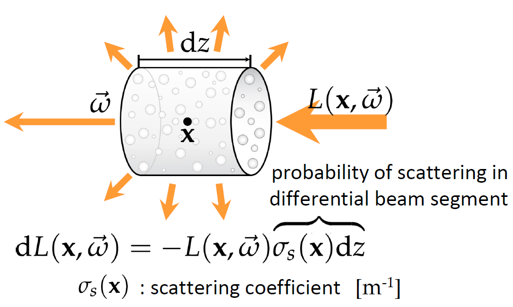
In-scattering
The scattering coefficient should be the same as in out-scattering process.
Use integration to calculate L_s.
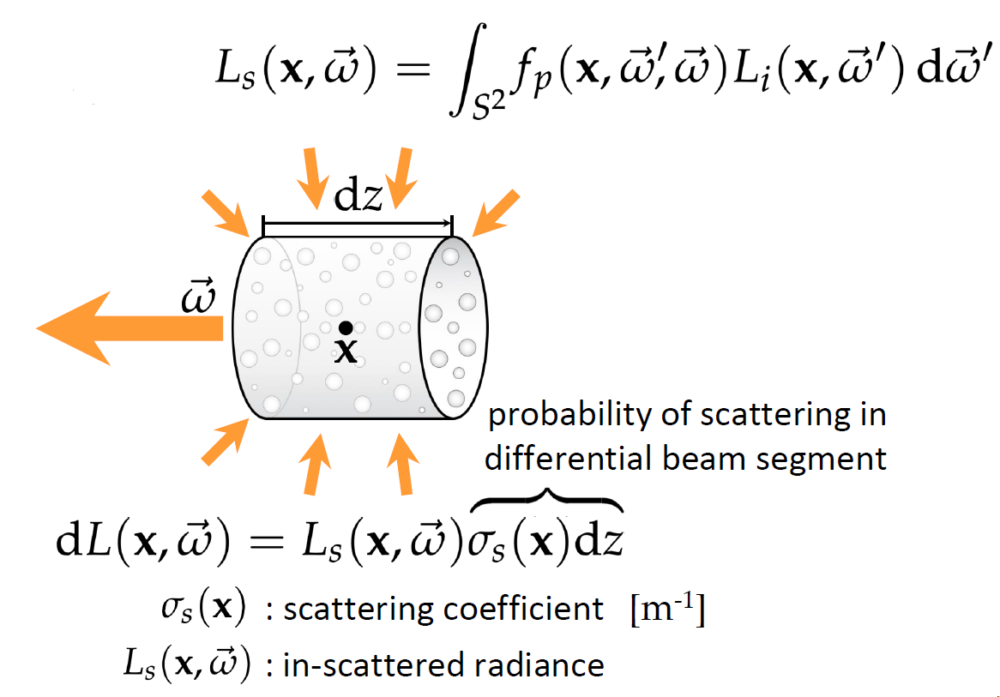
Emission
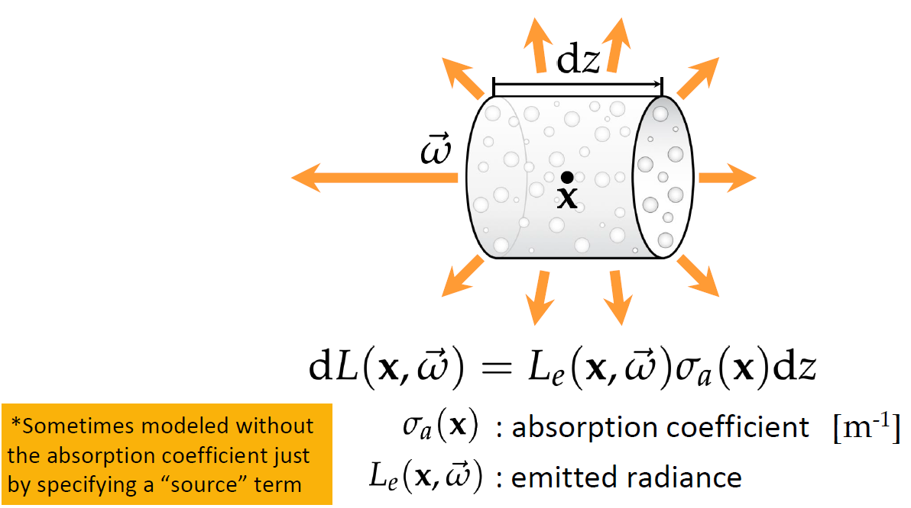
Radiative Transfer Equation (RTE, 辐射传输方程)
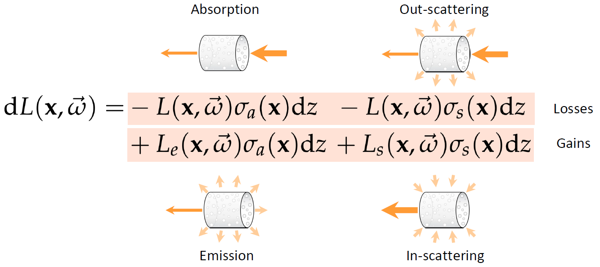
What about a beam with a finite length? As shown above, we can see the losses as a whole (extinction):
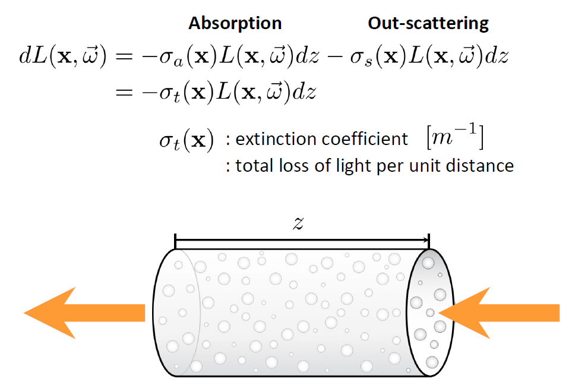
Then, think about extinction along an finite beam:
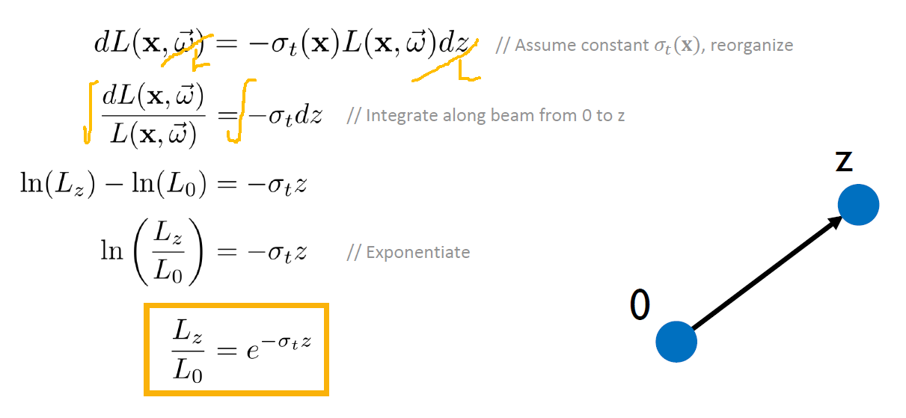
This is the so-called Beer-Lambert law.
Beer-Lambert Law
- Expresses the remaining radiance after traveling a finite distance through a medium with constant extinction coefficient.
- The fraction is referred to as the transmittance (这个比例被称为透过率).
- Think of this as fractional visibility between points.
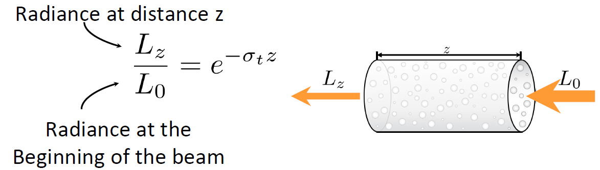
Transmittance
Think about how to express Homogeneous and Heterogeneous materials.
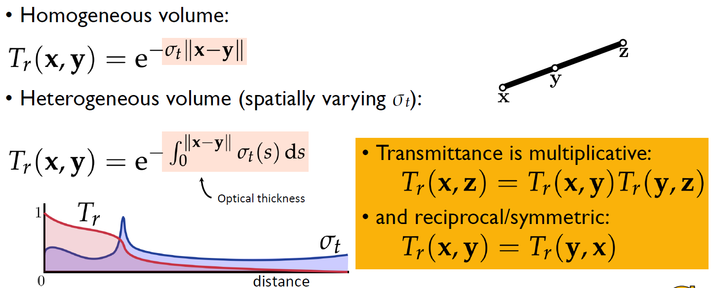
Key Takeaway of Participating Media Model
- Four terms are considered for light transfer within a participating media: absorption, out-scattering, in-scattering, and emission.
- Absorption and out-scattering are counted as loss terms.
- In-scattering and emission are counted as gain terms.
- The transfer process can be modeled as a differential equation by considering the contributions of all the four terms on a small beam.
Volume Rendering Equation
Integrate the Radiance Transfer Equation
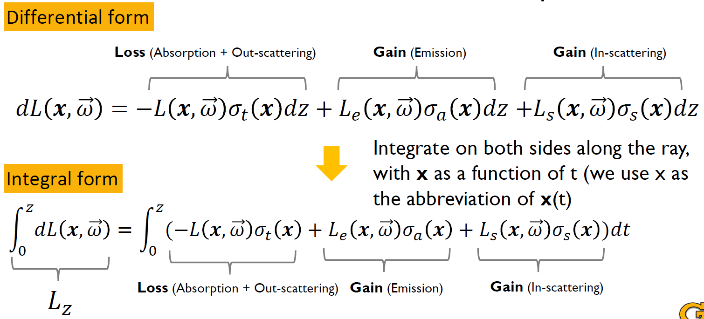
Integrak of Loss Only
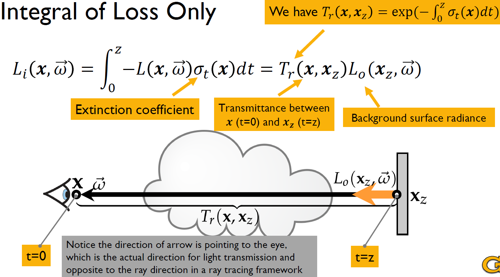
Integral of Loss + Emission
The term in the integral represents the fraction of the total extinction coefficient that is due to absorption at a given point .
- : The absorption coefficient, which measures how much radiance is absorbed per unit distance at .
- : The total extinction coefficient, which accounts for both absorption and scattering at . It is given by:
where is the scattering coefficient.
Thus, the ratio:
represents the probability that a photon is absorbed rather than scattered at location . This is often referred to as the absorption albedo.
In the radiative transfer equation, this ratio is used to weight the emitted radiance , ensuring that only the fraction of radiance that is truly absorbed and re-emitted contributes to the accumulated radiance seen by the observer.
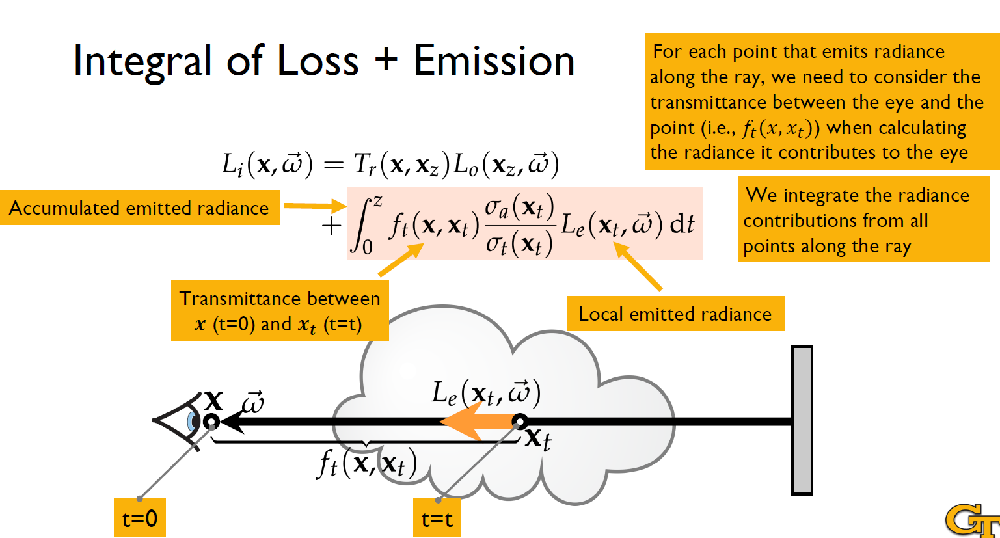
Integral of Loss + Emission + In-scattering
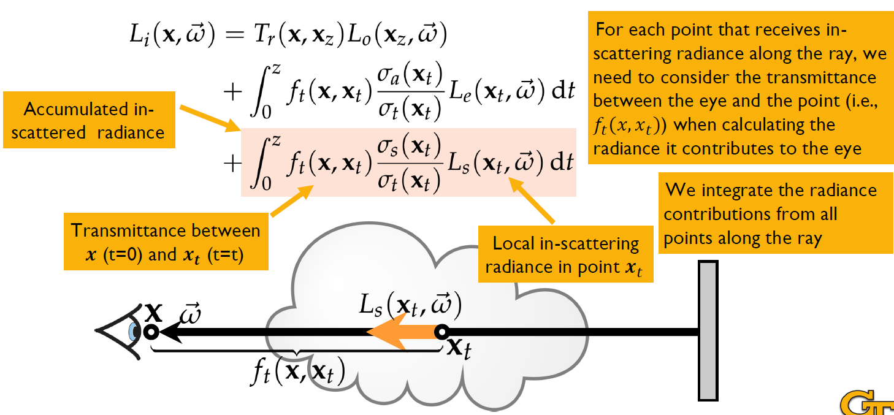
In addition, we can integrate in-scattering radiance from all directions.
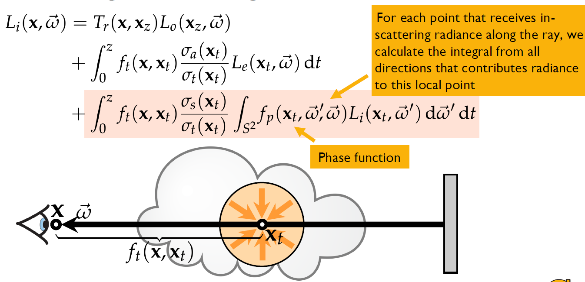
In the figure above, for each point that receives inscattering radiance along the ray, we calculate the integral from all directions that contributes radiance to this local point using a phase function. The phase function describes the angular distribution of scattered light in participating media, such as fog, smoke, or water. It determines how light changes direction when interacting with particles in the medium. The phase function is analogous to the Bidirectional Reflectance Distribution Function (BRDF) but applies to volumetric scattering rather than surface reflection.
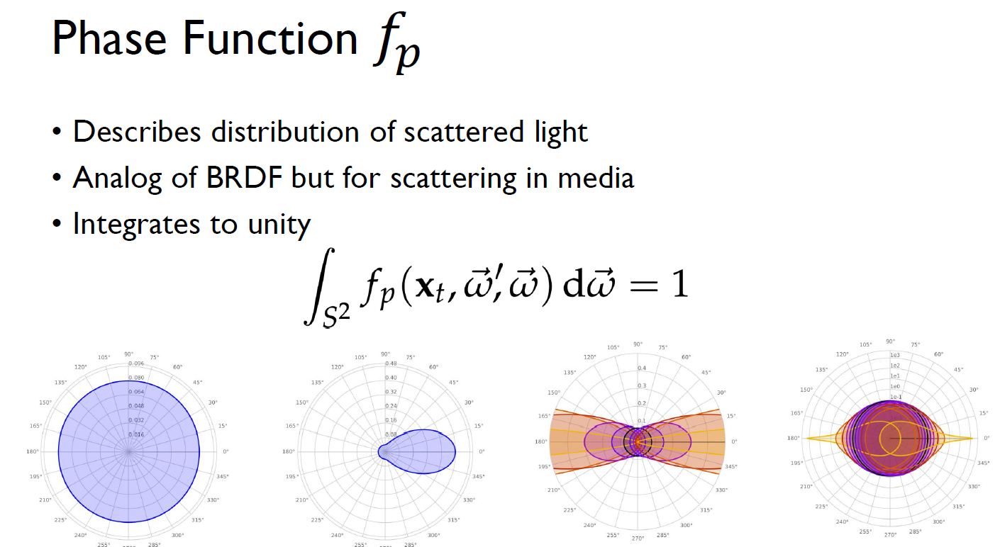
Summary of integral form of RTE
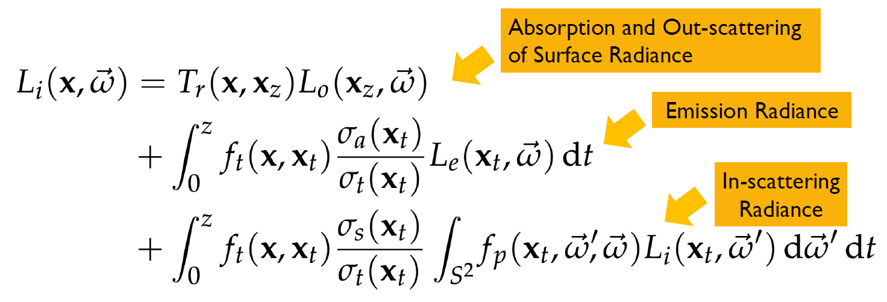
Volumetric Path Tracing
Purely Absorbing Media
with .
Here, is attenuated background radiance.
Numerical Implementation
See the equation of , we can approximate the integral by a discrete Riemann sum. The key step is to approximate along the ray from t=0 to t=z.
.
Here, is the sample of in local place and is the segment length.
Application
Glass.
Absorbing + Emissive Only Medium
We can simplify the emission term in RTE as below. tf and tn represent further point and nearer point.
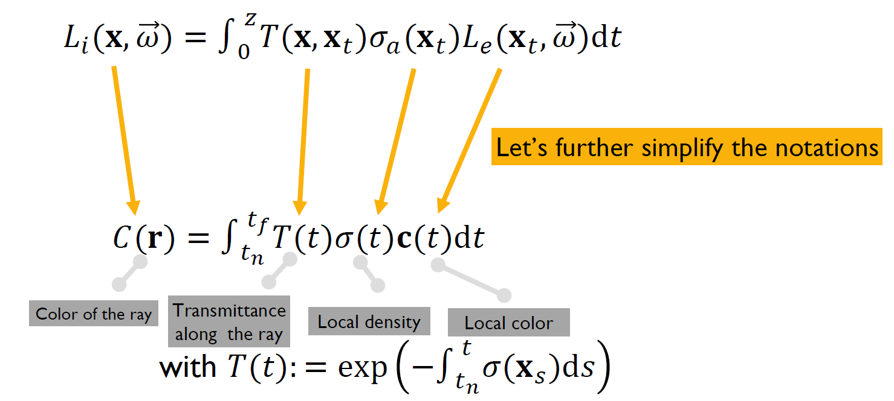
In addition, we can ignore the in-scattering term to further simplify the equation. This is because the in-scattering can be modeled as a kind of emission (Ls is too difficult to calculate).
Numerical Implementation - Estimating the Radiance Along a Ray
- Let denote samples along the current ray being cast into the scene (for ).
- Let denote the color of ray .
- We have , where $T(t) = exp(-\int _{t_n} ^{t} \sigma(r(s))ds) \approx $ (T is implemented by a Riemann sum) denotes the transmittance.
Then, we can approximate the integral by subdividing the ray into small segments. We assume volume density and color are roughly constant within each segment. Then we have (remember that T
is implemented by a Riemann sum - see the figure for numerical implementation for absorption only media):
.
Application
Fire, smoke.
Algorithm: Back-To-Front Composition
- This method starts from the farthest point along a ray and moves towards the camera.
- At each step, it blends the accumulated intensity with the new contribution from the current voxel (think of each voxel as a little light source). Each voxel contributes its emission and scales the previous intensity by its transmittance.
- Main disadvantage: Cannot support early ray termination (since all samples must be processed).
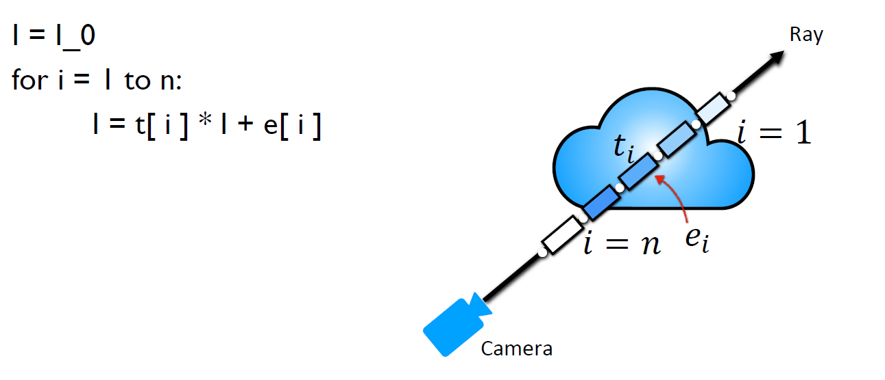
In the algorithm,
- t[i] is the transmittance of segment i;
- e[i] is the emitted radiance from segment;
- I accumulates the final intensity.
Algorithm: Front-To-Back Composition
- This method starts from the nearest voxel (closest to the camera) and moves towards the farthest voxel.
- It incrementally accumulates contributions while tracking the transmittance of the ray.
- It accumulates radiance while progressively attenuating background contributions.
- Main advantage: Enables early ray termination (if T becomes very small, further computation is unnecessary).
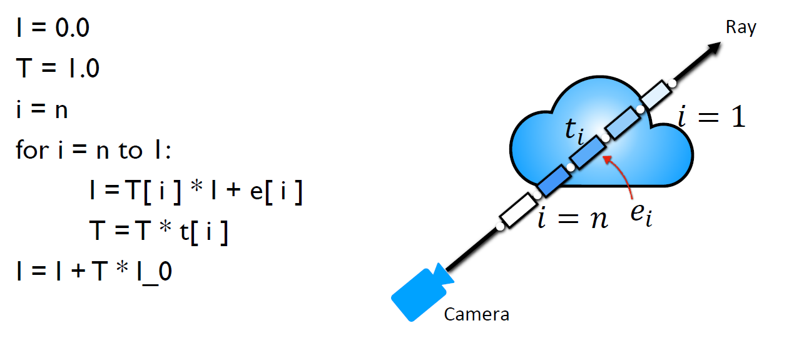
In the algorithm,
- T is the total transmittance up to voxel;
- I accumulates the final intensity.
Deriving quadrature estimate
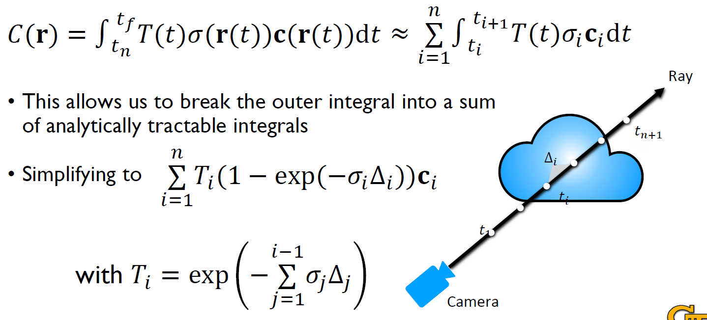